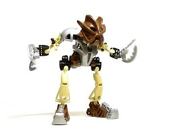

As a Toa Mata, Pohatu, being a Toa of Stone, possessed elemental powers of stone, along with great strength. He used Feet Additions, which he could use to kick and smash boulders, and wore a Kanohi Kakama, the Mask of Speed, which would let its user travel faster, allowing him to move anywhere in seconds.
As a Toa Nuva, Pohatu had enhanced powers over Stone. He had a pair of Climbing Claws, to climb cliffs and and channel his powers, and stronger feet additions, and wore a Kakama Nuva, the Nuva Mask of Speed, which would let its user travel at amazing speeds, with enhanced reflexes and the ability to pass through objects.
On Artakha, Pohatu received a set of adaptive armor, which would adapt its user to suit their environment, and adaptive weapons.
In Karda Nui, the armor adapted Pohatu, giving him Twin Propellers, a shoulder-mounted Midak Skyblaster, and an adapted Kakama Nuva. the Kanohi came with a visor, to protect the Toa's eyes when traveling at high speeds.
When on the Rockoh T3, the armor adapted Pohatu so that he had no weapons, and wore an adapted Kakama Nuva. The mask had a visor with fins, meant for aerodynamics.

Always one of the friendlier Toa, Pohatu was happy to see the team coming together and the internal fights a thing of the past. He was regarded as the most loyal and reliable team member, so easygoing and with such a good sense of humor that even Kopaka couldn't help liking him. But Pohatu was also a fierce fighter, especially when he felt the weak were being threatened (for example, when he charged at the Phantoka Makuta right when he saw the three Av-Matoran in danger). Pohatu was down to earth and was one of the only Toa who usually wanted to stay together. He was always considerate and nice to fellow Toa, Turaga and especially Matoran, and was somewhat of a consultant for the other Toa. He was possibly Kopaka's closest friend; when Pohatu was believed dead was the only time that Kopaka openly showed emotion.